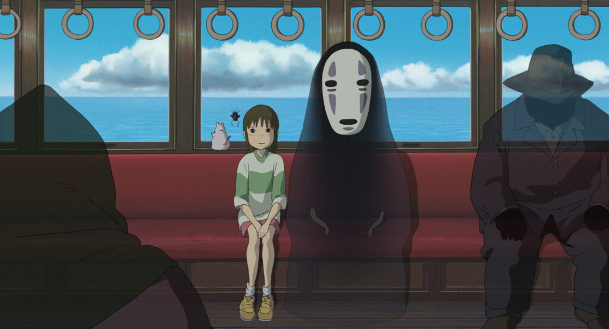

A Viagem de Chihiro
Chihiro, uma garota de 10 anos, está de mudança com seus pais. No caminho, eles se perdem e encontram um túnel misterioso que leva a uma cidade fantasma. Seus pais comem a comida de uma barraca e são transformados em porcos.
Presa em um mundo de deuses, espíritos e monstros, Chihiro deve trabalhar em uma casa de banhos gerenciada pela bruxa Yubaba para encontrar uma maneira de salvar seus pais e voltar ao mundo humano.
ÁUDIO:
Japonês, Português (Brasil)
LEGENDAS:
Português (Brasil), Inglês
CLASSIFICAÇÃO:
L
Livre para todos os públicos
GÊNEROS:
NOTA:
8.6/10